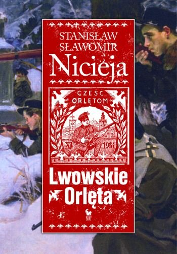

Lwowskie Orlęta. Czyn i legenda
Legenda Orląt Lwowskich, polskiej młodzieży walczącej o przynależność ich rodzinnego miasta do Polski, powstała tuż po zakończeniu walk o Lwów. Bohaterstwo młodych lwowian inspirowało do działania polityków, pisarzy, poetów, malarzy i rzeźbiarzy. Wyrazem hołdu dla bezgranicznego poświęcenia chłopców i dziewcząt, oprócz wierszy, piosenek, książek i obrazów, stał się Cmentarz Orląt miejsce patriotycznych obchodów i zadumy nad trudną historią Polski. Opis walk o Lwów w latach 1918–1920, sylwetki bohaterskich obrońców miasta, powstawanie i miejsce legendy Orląt w historycznej świadomości Polaków to treść tej książki.